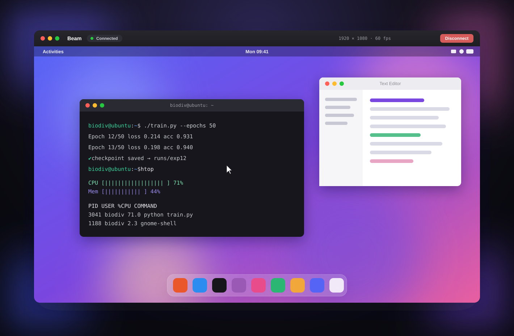

A clean, native macOS remote desktop for your Ubuntu machine.
.dmg · ~1 MBBeam is open source and I don't have a paid Apple Developer ID, so Gatekeeper blocks it the first time you open it. You only do this once.
Beam.dmg and drag Beam into your Applications folder./usr/bin/xattr -dr com.apple.quarantine /Applications/Beam.app
Beam talks VNC (RFB) directly. It's a Swift client written from scratch on Network.framework, so nothing else is doing the real work behind the scenes — no web view, no bundled third-party viewer.
The framebuffer goes straight to a CALayer, and the cursor is drawn on your Mac, so the pointer keeps up with your hand.
One toggle tunnels the whole session through SSH — keys, ssh-agent, or password. Or go direct over Tailscale.
Mouse, drag, scroll, and a complete keyboard with macOS→X11 keysym mapping. Map ⌘→Ctrl for Linux shortcuts.
Raw, CopyRect and Hextile, with incremental updates and TCP no-delay so it stays responsive.
A sidebar of your machines that gets out of the way when you connect, with live status and FPS.
SwiftUI + AppKit. Sidebar, full-screen, view-only mode — it feels like a Mac app because it is one.
Beam needs a VNC server attached to your real desktop. The helper script does it for you.
remote-setup.sh to the Ubuntu machine and run it — it installs x11vnc, auto-detects your display, and sets a VNC password../remote-setup.sh --service installs it as a background service.0, and your VNC password. Connect.Wayland note: x11vnc needs an Xorg session — pick "Ubuntu on Xorg" at the login screen.